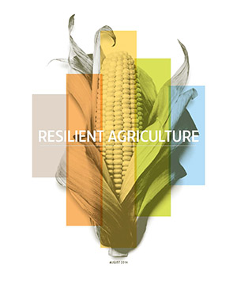

Find us on Twitter
Find us on TwitterLive-streaming the conference
Broadcast Schedule August 5-7
All times are Central Time
· Tuesday 10:30-11:30 a.m., press conference
· Tuesday 1-5 p.m., keynotes & sessions
· Wednesday 1:30-5 p.m., sessions
· Thursday 8-12 p.m., sessions
· Thursday 12:15-2 p.m., sessions
Click on the "Program" link on the right sidebar for session details.
Instructions
Five to ten minutes before each broadcast, please connect to the following online site, in order to view the webcast: www.extension.iastate.edu/broadcasts/ResilientAg
Though you may see the conference room and people milling around, the sound will not begin until we go live at the times given above in the broadcast schedule.
Live-stream moderator
Jean McGuire Sustainable Corn Project PhD Graduate Student, Iowa State University |
 |
Who to Contact if you Have Connection Problems
If at any time you are having difficulty connecting to the live-stream, please email:
Lynn Laws, lynnlaws@iastate.edu
Jean McGuire, jmcguire@iastate.edu
Press Packet
| Vilsack to Speak to Corn Belt Farmers in Ames, Iowa August 5th |
| Resilient Ag Conference Now Open to Crop Advisors and Farmers |
| Sustainable Corn Project - Top Ten Accomplishment for Year 3 |
| About the Sustainable Corn Project |
| See below for the Resilient Agriculture Magazine and other conference handouts |
Find us on Twitter at /sustainablecorn
Follow Tweets about the conference: #ResilientAg
Resilient Agriculture Magazine
|  |
Links to additional conference handouts
Climate Change Impacts in the United States – Highlights
http://nca2014.globalchange.gov/downloads
Cover Crop Field Guide
https://ag.purdue.edu/agry/dtc/Pages/CCFG.aspx
Statistical Atlas
http://sustainablecorn.org/What_Farmers_are_Saying/Stat-Atlas/StatisticalAtlas.pdf
Corn Growth and Development
https://store.extension.iastate.edu/Product/Corn-Growth-and-Development
25x’25 Adaptation Guide
http://www.25x25.org/storage/25x25/documents/Adaptation/agriculture_and_forestry_in_a_changing_climate_-_adaptation_recommendations.pdf